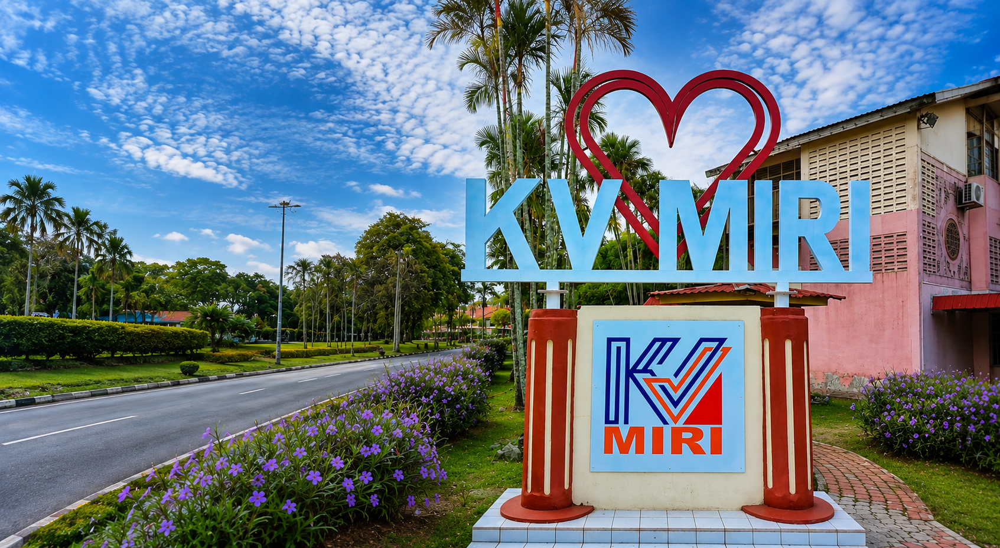

Portal Latihan Pensyarah Baharu
SPK KV MIRI 2026
Belajar dokumen kualiti dalaman secara interaktif, jawab kuiz, pantau kemajuan dan jana sijil digital selepas lulus penilaian akhir.
5 modul
50 soalan akhir
80% lulus
Aliran Pembelajaran
Lengkapkan modul mengikut turutan
Setiap modul mempunyai nota ringkas, aktiviti interaktif dan kuiz. Penilaian akhir akan membuka kelayakan sijil.
Modul
Dokumen Kualiti Dalaman SPK
Kandungan disusun berdasarkan PDF soalan kefahaman taklimat SPK pensyarah baharu.